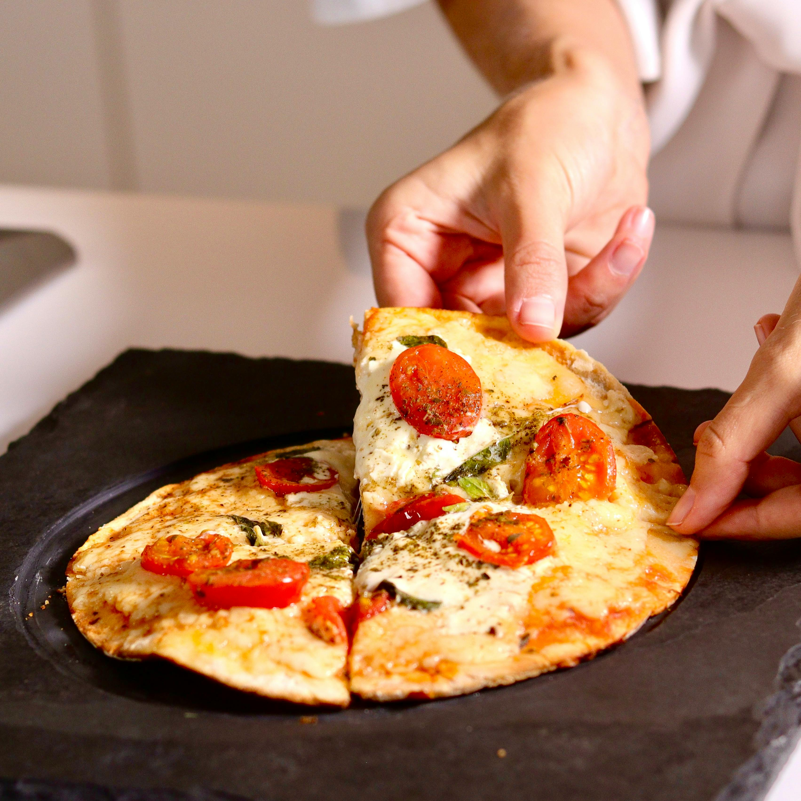

Home
Margherita Pizza

Description
Margherita Pizza is the Italian classic. It features a simple but tasty combination of red tomato sauce, white mozzarella cheese, and green basil. The secret to its perfection lies in using fresh, high-quality ingredients and a very hot oven to achieve a thin, crispy crust.
Ingredients
- 500 grams of flour
- 325 milliliters of water
- 7 grams of dry active yeast
- 5 grams of white sugar
- 10 grams of salt
- Olive oil
- 400 grams of canned peeled tomatoes
- 250 grams of mozzarella cheese
- 10-15 fresh basil leaves
Steps
- In a small bowl, mix the warm water, sugar, and yeast together. Let it sit for 10 minutes until it looks foamy on top.
- In a large bowl, mix the flour and salt. Pour in the yeast mixture and olive oil. Stir with a spoon until a dough forms, then knead it with your hands for 8 to 10 minutes until it is smooth and stretchy.
- Place the dough in an oiled bowl, cover it with a cloth, and leave it in a warm place for about 1 to 2 hours until it has doubled in size.
- Turn your oven to 220°C. Place your baking tray inside while the oven heats up.
- While the oven heats, crush the canned tomatoes in a bowl with a fork or blender and add a pinch of salt.
- Divide the dough into two balls. On a floured surface, stretch or roll each ball into a thin circle about 25 to 30 centimeters wide.
- Spread a thin layer of tomato sauce over the dough, leaving a small border for the crust. Arrange the mozzarella slices evenly on top.
- Carefully place the pizza on the hot baking tray in the oven. Bake for 8 to 12 minutes until the crust is golden and the cheese is bubbling.
- Take the pizza out and immediately top it with fresh basil leaves and a drizzle of olive oil. Serve hot.